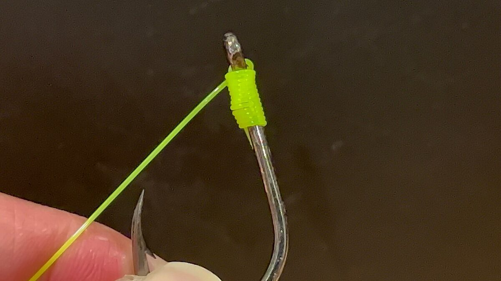

Zasady ogólne — zanim zawiążesz cokolwiek
Zwilżanie, dociąganie, testowanie
Trzy nawyki decydują o wytrzymałości węzła bardziej niż wybór samego węzła. Po pierwsze, zwilżanie: przed zaciśnięciem zawsze nawilż węzeł śliną lub wodą. Zaciskający się na sucho monofil i fluorocarbon nagrzewają się od tarcia, a lokalne przegrzanie osłabia żyłkę nawet o kilkadziesiąt procent — niewidocznie gołym okiem. Po drugie, dociąganie: zaciskaj węzeł powoli, jednostajnym ruchem, ciągnąc za właściwe końce (zwykle za linkę główną i koniec roboczy jednocześnie), aż zwoje ułożą się równo i ciasno; węzeł dociągnięty „na pół gwizdka" przesunie się pod obciążeniem i pęknie. Po trzecie, testowanie: każdy zawiązany węzeł obciąż zdecydowanym, płynnym pociągnięciem (przy haczyku — zaczep go o coś miękkiego, nie o palec), zanim polecisz na nim z rybą. Lepiej, żeby wadliwy węzeł puścił przy teście niż przy rybie życia. Koniec roboczy przycinaj na 2–3 mm, nie przy samym węźle.
Wytrzymałość węzłów w procentach — jak to rozumieć
Wytrzymałość węzła podaje się jako procent wytrzymałości liniowej żyłki: węzeł „90%" na żyłce o wytrzymałości 5 kg pęknie przy ok. 4,5 kg. Orientacyjne wartości dla starannie zawiązanych węzłów: palomar i grinner 85–95%, clinch ulepszony 80–90%, zwykły clinch 75–85%, FG przy łączeniu plecionki z przyponem 90–100% wytrzymałości słabszej linki, albright 70–90%, pętla perfection ok. 80–90%. Traktuj te liczby jako przedziały, nie pewniki: realna wytrzymałość zależy od średnicy i marki żyłki, staranności wiązania, zwilżenia i liczby owinięć — testy publikowane przez producentów i serwisy wędkarskie różnią się między sobą o kilkanaście punktów procentowych. Praktyczny wniosek jest jednak stały: różnica między węzłem dobrym a złym (albo dobrym źle zawiązanym) to często 30–40% wytrzymałości zestawu, czyli różnica między wyholowaną a zerwaną rybą.
Żyłka, fluorocarbon, plecionka — różne materiały, różne węzły
Monofil (nylon) jest rozciągliwy i lekko sprężysty — większość klasycznych węzłów trzyma na nim dobrze. Fluorocarbon jest sztywniejszy, twardszy i bardziej śliski, a przy ciasnych, ostrych zagięciach pęka łatwiej; lubi węzły o łagodnych łukach (grinner, palomar) i bardzo staranne zwilżanie, a w grubszych średnicach bywa kapryśny przy clinchu. Plecionka nie rozciąga się i jest skrajnie śliska — węzły o małej liczbie owinięć po prostu się z niej zsuwają; wymaga zwiększenia liczby zwojów (np. grinner 6–8 zamiast 4–5), podwajania linki (palomar sprawdza się świetnie) albo węzłów dedykowanych (FG do łączenia z przyponem). Złota zasada: liczba owinięć rośnie wraz ze śliskością i maleje wraz z grubością linki — na grubym monofilu 0,40 mm wystarczą 4 zwoje, na cienkiej plecionce potrzeba ich 7–8.
Węzły do przywiązywania haczyka i przynęty
Clinch i clinch ulepszony (improved clinch)
Najpopularniejszy węzeł wędkarski świata, podstawa do nauki.
- Przewlecz koniec żyłki przez oczko haczyka lub krętlika, zostawiając ok. 10–15 cm zapasu.
- Owiń koniec roboczy wokół linki głównej 5–7 razy (mniej na grubej żyłce, więcej na cienkiej).
- Przewlecz koniec z powrotem przez małą pętelkę powstałą tuż przy oczku.
- Wersja ulepszona: dodatkowo przeprowadź koniec przez dużą pętlę utworzoną w kroku 3 — to zabezpieczenie przed rozsuwaniem.
- Zwilż, dociągnij płynnie za linkę główną, przytrzymując koniec roboczy, przytnij.
Zastosowanie: haczyki, krętliki, przynęty na monofilu i cieńszym fluorocarbonie. Mocne strony: prosty, szybki, łatwy do zawiązania zmarzniętymi palcami i o zmierzchu. Słabe strony: na plecionce się zsuwa (nie używać!), na grubym fluorocarbonie powyżej ok. 0,35 mm słabo się zaciska, a zwykła wersja bez „ulepszenia" potrafi puścić na śliskich żyłkach. Wytrzymałość: ok. 75–85% (zwykły), 80–90% (ulepszony).
Palomar
Faworyt testów wytrzymałości i jeden z niewielu klasyków pewnych także na plecionce.
- Złóż żyłkę podwójnie i przewlecz pętlę przez oczko haczyka (przy małych oczkach przewlecz pojedynczo i wróć końcem).
- Z podwojonej linki zawiąż luźny węzeł prosty (zwykły „supeł") — haczyk wisi w jego środku.
- Przełóż pętlę przez cały haczyk lub przynętę, tak by znalazła się powyżej oczka.
- Zwilż i dociągnij równomiernie za oba końce, pilnując, by pętla zacisnęła się na lince nad oczkiem, a zwoje ułożyły równo.
- Przytnij koniec roboczy.
Zastosowanie: haczyki, jigi, krętliki — na plecionce, monofilu i fluorocarbonie. Mocne strony: bardzo wysoka i powtarzalna wytrzymałość (85–95%), podwojona linka w oczku, trudno go zawiązać „trochę źle". Słabe strony: trzeba przełożyć pętlę przez całą przynętę, więc nie nadaje się do dużych woblerów i gotowych zestawów; przy wiązaniu łatwo o skrzyżowanie zwojów, które obniża wytrzymałość — dociągaj powoli. Na fluorocarbonie pilnuj, by węzeł prosty nie zaciskał się na krzyż.
Grinner / uni
Uniwersalny węzeł zaciskowy o łagodnej geometrii, ulubieniec łowców grubych ryb.
- Przewlecz koniec przez oczko i poprowadź go równolegle wzdłuż linki głównej (zostaw ok. 15 cm).
- Zawróć koniec, tworząc pętlę nad obiema równoległymi linkami.
- Owiń koniec roboczy 4–6 razy (plecionka: 6–8) wokół obu linek, prowadząc zwoje wewnątrz pętli.
- Zwilż i zaciśnij węzeł, ciągnąc za koniec roboczy — powstaje zwarty „bęben" na lince.
- Dosuń zaciśnięty węzeł do oczka, ciągnąc za linkę główną; przytnij koniec.
Zastosowanie: haczyki, krętliki, przywiązanie linki do szpuli kołowrotka; działa na monofilu, fluorocarbonie i (z większą liczbą zwojów) na plecionce. Mocne strony: wysoka wytrzymałość (85–95%), łagodne łuki przyjazne fluorocarbonowi, można go zostawić niedosunięty jako węzeł z luźną pętelką dającą przynęcie swobodę ruchu. Słabe strony: nieco wolniejszy w wiązaniu od clincha, zaciśnięty zbyt wcześnie nie da się już dosunąć bez osłabienia.
Podwójny grinner (double uni) — łączenie dwóch linek
Najprostszy niezawodny sposób łączenia dwóch żyłek, także różnych średnic i materiałów.
- Ułóż końce obu linek równolegle, naprzeciwko siebie, z zakładem ok. 20–25 cm.
- Końcem pierwszej linki zawiąż węzeł grinner (jak wyżej, 4–6 zwojów; na plecionce 7–8) wokół drugiej linki i zaciśnij go.
- Końcem drugiej linki zawiąż lustrzany grinner wokół pierwszej i zaciśnij.
- Zwilż całość i ciągnij za obie linki główne — oba węzły zsuną się ku sobie i zaprą jeden o drugi.
- Przytnij oba końce na 2–3 mm.
Zastosowanie: plecionka–fluorocarbon, monofil–monofil, dowiązywanie podkładu na szpuli, strzałówki (shock leadera). Mocne strony: łatwy do nauczenia, działa na każdej kombinacji materiałów, wybacza różnice średnic do ok. 1:3. Słabe strony: węzeł jest większy i mniej opływowy od FG — gorzej przechodzi przez przelotki przy dalekich rzutach; wytrzymałość ok. 80–90% słabszej linki.
Łączenie plecionki z przyponem
FG (plecionka–fluorocarbon)
Standard nowoczesnego spinningu: najcieńsze i najmocniejsze połączenie plecionki z przyponem fluorocarbonowym lub monofilowym. Działa na zasadzie oplotu — plecionka zaciska się na przyponie jak chiński chwytak na palec.
- Napnij plecionkę (przytrzymaj ją zębami, kolanem lub zaczep o przelotkę napiętej wędki) — napięcie to klucz do tego węzła.
- Przyłóż fluorocarbon pod kątem do napiętej plecionki i oplataj go nią naprzemiennie: raz z góry, raz z dołu, układając ciasne, przylegające zwoje — łącznie 14–20 oplotów.
- Zabezpiecz oplot półsztykiem (hitch) z plecionki zaciśniętym na obu linkach, potem drugim na samej plecionce.
- Zwilż i mocno zaciągnij, ciągnąc za plecionkę i przypon — oplot powinien wgryźć się w fluorocarbon i pociemnieć od ścisku.
- Przytnij koniec fluorocarbonu przy węźle, dodaj 3–5 zabezpieczających półsztyków na plecionce i przytnij jej koniec.
Zastosowanie: wyłącznie połączenie plecionka–przypon (fluoro lub mono). Mocne strony: najsmuklejszy ze wszystkich łączników — przelatuje przez przelotki bezgłośnie, wytrzymałość przy poprawnym zawiązaniu sięga 90–100% słabszej linki. Słabe strony: wymaga wprawy i kilkudziesięciu treningów w domu, źle wiąże się na wietrze, mrozie i w nocy; źle zaciśnięty rozplata się bez ostrzeżenia — zawsze testuj mocnym pociągnięciem. Nie nadaje się do łączenia dwóch monofili.
Albright
Starszy, prostszy kuzyn FG — szybki łącznik linek o różnych średnicach.
- Z grubszej linki (przyponu) uformuj pętlę i trzymaj ją palcami.
- Przewlecz cieńszą linkę (plecionkę) przez pętlę, zostawiając długi koniec roboczy.
- Owiń plecionką oba ramiona pętli 10–12 ciasnych zwojów, kierując się od palców ku zamknięciu pętli.
- Przewlecz koniec plecionki z powrotem przez pętlę — tą samą stroną, którą wszedł.
- Zwilż, dociągnij najpierw zwoje (zsuwając je ku końcowi pętli, ale nie poza nią), potem zaciśnij całość za wszystkie cztery końce i przytnij.
Zastosowanie: plecionka–gruby przypon (także stalka z pętelką, mono o dużej różnicy średnic), sytuacje awaryjne nad wodą, gdy na FG nie ma warunków. Mocne strony: szybki, znacznie łatwiejszy od FG, toleruje duże różnice grubości. Słabe strony: grubszy i mniej gładki od FG, wytrzymałość zmienna (ok. 70–90%) i wrażliwa na staranność ułożenia zwojów; zwoje zsunięte poza pętlę to gwarantowane zerwanie.
Pętle i zestawy
Pętla zwykła: perfection loop i pętla na ósemce
Stała pętla na końcu linki to podstawa systemu wymiennych przyponów. Dwa sprawdzone sposoby. Perfection loop (pętla doskonała):
- Uformuj pętlę A, prowadząc koniec roboczy za linką główną.
- Przed pętlą A uformuj drugą, mniejszą pętlę B z konca roboczego.
- Przełóż koniec roboczy jednym ruchem między obiema pętlami.
- Przeciągnij pętlę B przez pętlę A, zwilż i zaciśnij za linkę główną i pętlę.
Pętla na ósemce (figure-eight): złóż linkę podwójnie, z podwojonego odcinka zawiąż ósemkę (pętla, obrót o 360°, przełożenie końca przez pierwsze oczko) i zaciśnij — szybsza, nieco grubsza, bardzo trudna do rozwiązania. Zastosowanie: koniec przyponów, zestawy feederowe i spławikowe, pętle na strzałówce. Mocne strony: perfection daje małą pętlę idealnie w osi linki (ważne przy przyponach muchowych i feederowych), ósemka jest błyskawiczna i pewna; obie trzymają ok. 80–90%. Słabe strony: pętla na ósemce na grubym fluorocarbonie potrafi go nadwerężać w ciasnym zagięciu; perfection wymaga chwili nauki, by nie pomylić kolejności pętli. Obie działają na mono i fluoro; na samej plecionce pętle wiąż podwojoną linką i z dodatkowym obrotem.
Pętla w pętlę (loop-to-loop)
To nie tyle węzeł, co sposób łączenia dwóch gotowych pętli — np. przyponu z linką główną — pozwalający wymieniać przypony w kilka sekund bez wiązania nad wodą.
- Przygotuj pętlę na końcu linki głównej i pętlę na przyponie (perfection lub ósemka).
- Przełóż pętlę linki głównej przez pętlę przyponu.
- Przez wystającą pętlę linki głównej przewlecz cały przypon (haczykiem naprzód) i przeciągnij go w całości.
- Dociągnij oba połączenia tak, by pętle zaparły się o siebie w kształt prostego „uścisku dłoni" (dwie proste pętle), a nie zadzierzgnięcia.
Zastosowanie: szybka wymiana przyponów w feederze, spławiku i muszce, łączenie przyponów strzałowych. Mocne strony: błyskawiczna wymiana, brak wiązania zmarzniętymi rękami, wytrzymałość praktycznie równa użytym pętlom. Słabe strony: poprawność ułożenia jest kluczowa — jeśli pętle zaciągną się w „dławicę" (jedna dusi drugą pod kątem), połączenie traci nawet połowę mocy; połączenie jest też grubsze niż węzeł bezpośredni i zbiera drobne glony w zakwitłej wodzie.
Knotless knot — włos karpiowy
„Węzeł bezwęzłowy" to fundament nowoczesnego karpiarstwa: jednym ciągiem formuje przypon z haczykiem i włosem, na którym prezentowana jest kulka proteinowa — ryba zasysa przynętę swobodnie, a haczyk pozostaje goły i obraca się w pysku.
- Na końcu plecionki przyponowej zawiąż małą pętelkę (ósemka) — to mocowanie stopera kulki; ustal długość włosa, przykładając kulkę do haczyka (przynęta powinna wisieć ok. 0,5–1 cm pod kolankiem).
- Przewlecz drugi koniec materiału przez oczko haczyka od strony grotu i ułóż włos wzdłuż trzonka.
- Owiń materiał wokół trzonka i leżącego na nim włosa 6–8 ciasnych zwojów, schodząc od oczka w dół trzonka.
- Po ostatnim zwoju przewlecz koniec roboczy ponownie przez oczko, tym razem od strony grotu ku tyłowi — kierunek przełożenia decyduje o agresji obrotu haczyka.
- Zwilż, dociągnij za oba końce, nasuń (opcjonalnie) rurkę pozycjonującą i zawiąż drugi koniec przyponu pętlą do klipsa bezpieczeństwa.
Zastosowanie: przypony włosowe na karpia, amura, lina — na plecionkach przyponowych w otulinie i bez, miękkich monofilach i fluorocarbonie przyponowym. Mocne strony: bardzo mocny (owinięcia pracują na trzonku, nie na ostrym zagięciu), pozwala dowolnie regulować długość włosa, samoczynnie ustawia haczyk grotem w dół wargi. Słabe strony: wymaga dopasowania długości włosa do konkretnej przynęty; przy zbyt małej liczbie zwojów materiał w otulinie potrafi się obracać na trzonku. Pamiętaj o zasadzie: ostatnie przełożenie przez oczko zawsze od strony grotu, inaczej haczyk traci właściwą pracę.
Najczęstsze błędy i diagnostyka
Siedem grzechów głównych przy wiązaniu
Pierwszy: zaciskanie na sucho — przegrzana żyłka pęka „bez powodu" przy pierwszej większej rybie, a przyczyną był moment wiązania. Drugi: zła liczba zwojów — za mało na cienkiej lub śliskiej lince (węzeł się zsuwa), za dużo na grubej (węzeł nie domyka się równo). Trzeci: skrzyżowane zwoje — żyłka przecinająca samą siebie pod kątem działa jak nóż; zwoje muszą leżeć równolegle. Czwarty: przycinanie końca przy samym węźle — zostaw 2–3 mm, bo każdy węzeł minimalnie pracuje. Piąty: wiązanie na zmęczonym odcinku — ostatni metr żyłki po dniu łowienia jest poobijany o przelotki; przed związaniem nowego zestawu urwij 50–100 cm. Szósty: ten sam węzeł do wszystkiego — clinch na plecionce to klasyka zerwań. Siódmy: brak testu — każdy węzeł obciąż przed pierwszym rzutem, a w trakcie łowienia regularnie sprawdzaj palcami, czy nie ma zgrubień i wąsów na lince przy węźle.
Jak rozpoznać, że zawiódł węzeł
Po zerwaniu obejrzyj koniec linki — to najlepsza lekcja, jaką daje porażka. Gładki, lekko zgrubiały lub skręcony w „świński ogonek" koniec oznacza, że węzeł się rozsunął: za mało zwojów, brak zwilżenia albo niedociągnięcie. Równe przecięcie tuż za miejscem, gdzie był węzeł, to pęknięcie w węźle — typowe dla przegrzania, skrzyżowanych zwojów lub złego doboru węzła do materiału. Przecięcie w połowie linki, daleko od węzła, wskazuje na uszkodzenie mechaniczne (przelotka, muszle, konstrukcje) — węzeł jest niewinny. Prowadzenie takiej prostej „sekcji zwłok" po każdym zerwaniu szybko pokaże, który element twojego warsztatu wymaga poprawy.
Trening i minimalny zestaw węzłów
Nie ucz się dziesięciu węzłów naraz — naucz się czterech porządnie: grinner (haczyki i krętliki na wszystkim), palomar (plecionka, jigi), podwójny grinner albo FG (łączenie z przyponem) i pętla na ósemce (zestawy). Ten komplet pokrywa 95% sytuacji nad wodą. Trenuj w domu na sznurku lub grubej żyłce 0,40–0,50 mm, przy której widać układ zwojów, a dopiero potem schodź do średnic łowieckich. FG ćwicz do momentu, aż zawiążesz go poprawnie dziesięć razy z rzędu, mierząc czas — nad wodą, na wietrze i z zimnymi palcami będzie dwa razy trudniej. Warto też mieć w pudełku przygotowane w domu przypony z gotowymi pętlami: najlepszy węzeł to ten zawiązany w spokoju przy stole.
FAQ — najczęstsze pytania
Który węzeł jest najmocniejszy?
Nie ma jednego zwycięzcy — wytrzymałość zależy od materiału i staranności. W testach do haczyka najczęściej wygrywają palomar i grinner (85–95%), a do łączenia plecionki z przyponem poprawnie zawiązany FG (90–100% słabszej linki). Ważniejsze od rankingu jest to, że dobrze opanowany „średni" węzeł bije na głowę najlepszy węzeł zawiązany byle jak.
Czy mogę wiązać clinch na plecionce?
Nie warto. Plecionka jest śliska i nierozciągliwa, a clinch trzyma głównie tarciem zwojów — na plecionce stopniowo się zsuwa, często dopiero przy większej rybie. Na plecionce używaj palomara lub grinnera z 6–8 zwojami, a do łączenia z przyponem FG lub podwójnego grinnera.
FG czy podwójny grinner do przyponu fluorocarbonowego?
Jeśli węzeł ma przelatywać przez przelotki podczas rzutu (długi przypon) — FG, bo jest najsmuklejszy i najmocniejszy. Jeśli przypon jest krótki i węzeł zostaje przed szczytówką, albo wiążesz w trudnych warunkach (mróz, noc, wiatr) — podwójny grinner jest szybszy i mniej wrażliwy na błędy. Wielu spinningistów stosuje oba: FG planowo, grinner awaryjnie.
Jak długo „żyje" węzeł — czy trzeba przewiązywać?
Tak. Węzeł pracuje przy każdym rzucie i holu, a żyłka przy nim się męczy. Przewiązuj zestaw po każdej większej rybie, po mocnym zaczepie i odzysku przynęty siłą oraz profilaktycznie co kilka godzin intensywnego łowienia. Regularnie przesuwaj też palcami po ostatnim metrze linki — szorstkość lub zgrubienie to sygnał do natychmiastowego skrócenia i przewiązania.
Źródła i weryfikacja
Instrukcje wiązania opisują powszechnie znane, klasyczne węzły wędkarskie w ich standardowych wersjach, zgodnych z literaturą wędkarską i materiałami instruktażowymi producentów żyłek i plecionek. Podane wartości wytrzymałości w procentach są orientacyjnymi przedziałami zaczerpniętymi z ogólnodostępnych testów porównawczych — wyniki różnią się zależnie od marki i średnicy linki, dlatego traktuj je jako wskazówkę, a nie gwarancję. Przed użyciem każdego węzła w łowieniu przetestuj go samodzielnie na swojej żyłce; przy zestawach karpiowych stosuj wyłącznie bezpieczne klipsy umożliwiające uwolnienie ciężarka, zgodnie z zasadami opisanymi w regulaminach łowisk i dobrymi praktykami PZW.